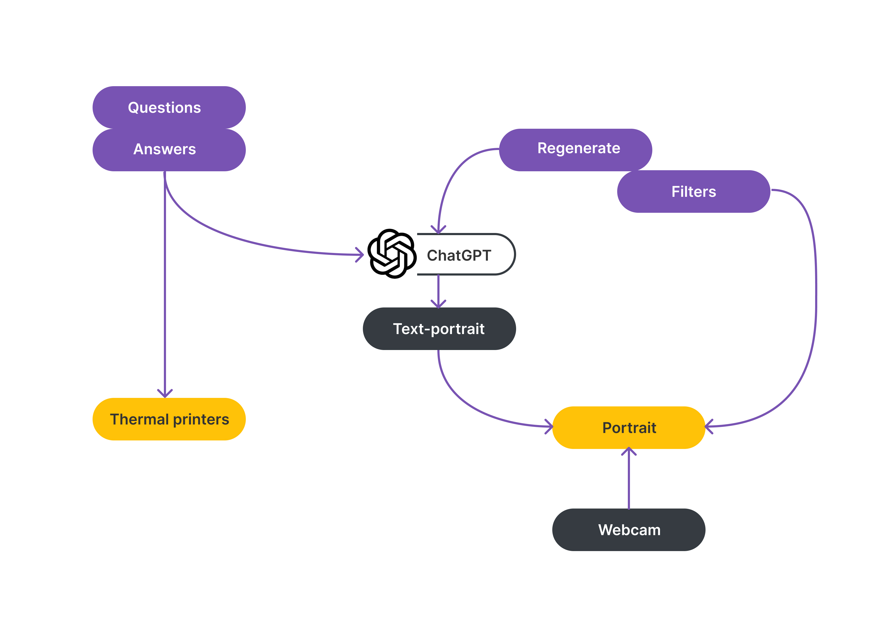

Make A Portrait of Childhood Self, 2024 Help people embrace their vulnerability through self-portrait making
This design is an interactive installation aimed at enabling participants to create self-portraits guided by their childhood memories. This project draws inspiration from the modern artwork that explores self-image and the therapeutic effect of art therapy, aiming to help people accept their vulnerable feelings through introspection and creative activity. To achieve this, expert interviews with professionals and exploration with generative models were conducted to gather insights and inform the design process. The installation incorporates prompting guidance that evoke personal childhood memories, fostering an emotional connection and self-reflection. The findings indicates that the installation succeeded in providing playable experiences and eliciting positive emotions for people, which is very beneficial in cultivating self-acceptance and helping people embrace their vulnerability.
The designer with the installation presenting the portrait created by users
KEYWORDS
Interactive installation Self-portrait Art therapy LLM application
SKILLS
LLM embedding LLM prompting Physical computing: Arduino Computing languages: JavaScript, Phython Web things: APIs, html5, css, node.js Prototyping Graphic design Collaboration User co-creation
Starting Point: Self-Portrait
right scroll >>
Fascinating art form
Various media
Facial features
Text Soundscape Performance art ...
Identity explora
tion beyond “self-portrait”
List of Figures: Figure 1: van Eyck, J. (1433). Man in a Red Turban [Painting on panel]. National Gallery, London. https://www.nationalgallery.org.uk/paintings/ jan-van-eyck-portrait-of-a-man-self-portrait. Figure 2: Kahlo, F. (1940). Self-portrait with cropped hair [Oil on canvas]. Museum of Modern Art, New York City, NY, United States. https://www.moma.org/ collection/works/78333 Figure 3: Sherman, C. (1985). Untitled #153 [Chromogenic print]. Museum of Modern Art, New York City, NY, United States. https://www.moma.org/ collection/works/56490 Figure 4: Lassnig, M. (1971). Selfportrait [Film]. https://www.sixpackfilm.com/en/catalogue/119/ Figure 5: Picasso, P. (1972) Self-portrait [Pencil on paper]. https://arthive.com/ zh/pablopicasso/works/487489 Figure 6: Sherman, C. (2003). Untitled #414 [Chromogenic print]. https://artsandculture.google.com/asset/untitled-414-cindy-sherman/ sgFPV7yFYqTxow?hl=en Figure 7: Bacon, F. (1969). Self-Portrait [Oil on canvas]. https://www.francis- bacon.com/artworks/paintings/self-portrait-2 Figure 8: Jonas, J. (1972). Left Side Right Side [Video (black and white, sound)]. https://ubu.com/film/jonas_left.html Figure 9: Ligon, G. (1993). Ran Away [prints]
Therapeutic Function of Self-Portrait Making -- click to expand
▼The therapeutic function of self-portraits is obvious, establishing a close connection between self-portraiture and therapy. - Self-portrait as a kind of art is often produced by the raw material “emotions”. As the subjects of their own artistic creations, we become unavoidably vulnerable, people are forced to think about how they want to be presented in the portrait, and that elicits self-awareness and a process of self-reflection. - The inner dialogue that takes place in front of the camera or the canvas or the recorder etc. mirrors the internal processes encountered in therapy — self-perception, self-questioning, judgment, thoughtful contemplation, and acceptance. - Visual, audio, or text-based self-portraits (as opposed to a self-image existing solely in the mind) are indispensable. They serve as tangible reflections on various aspects of one's being. Creating a self-portrait may unveil a hidden self and having a self-portrait that people can reflect on later might provide a new perspective on viewing themselves so that they can discover different facets of themselves. - It's also obvious that every self-portrait is always a form of performance. Individuals engage in a deliberate "performance" to present a desired image, which resembles role-playing in theatrical dramas. The unique combination of self-subjectivity and dramatic features in self-portraiture holds a particular promise in addressing issues related to self-image and feelings of vulnerability. ...
Ideation -- click to expand
▼The Workflow
Interactive Installation That Enables Self-Portrait Making
The final design is an interactive installation featuring a central screen, a webcam above it, two printers on either side, and two main control panels below. The lower control panel includes a eyboard and a purple button-board, while the other is a yellow panel equipped with two rotary switches and three buttons.


The yellow panel

"short and strong"

"poetic"

"story-like"

"dual-contrast"

"posterize"

User with their portrait